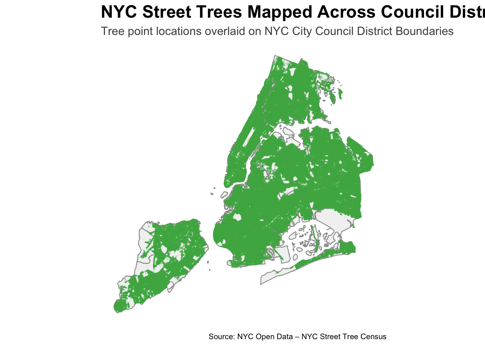
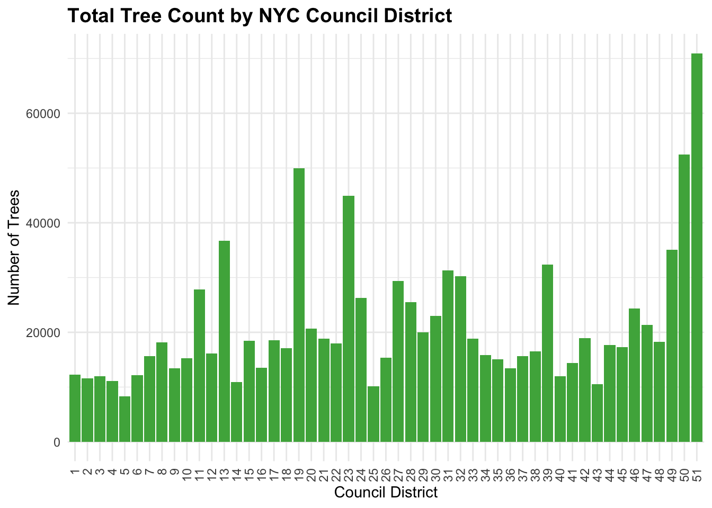
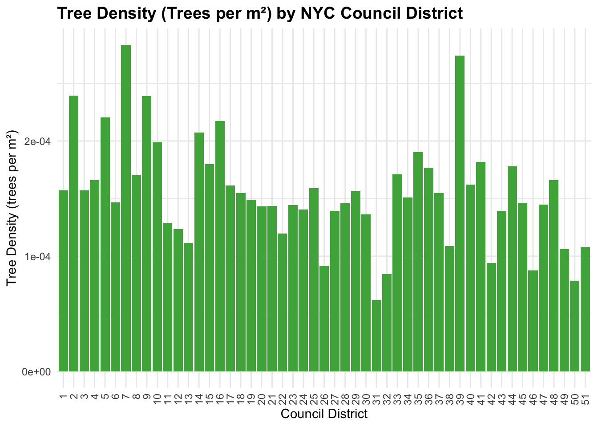
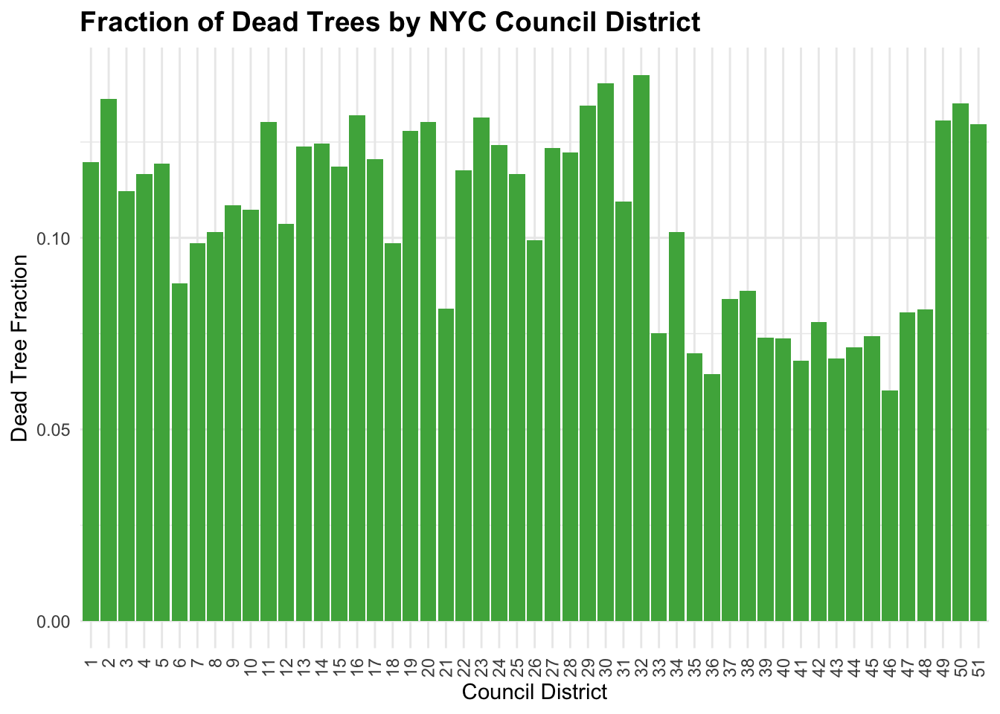
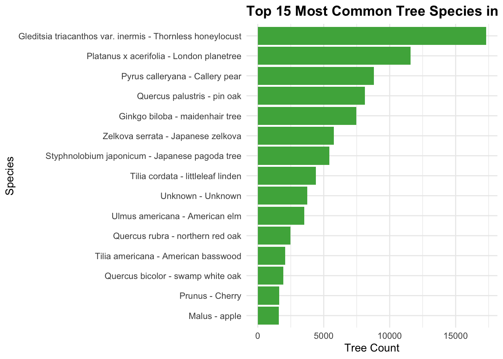
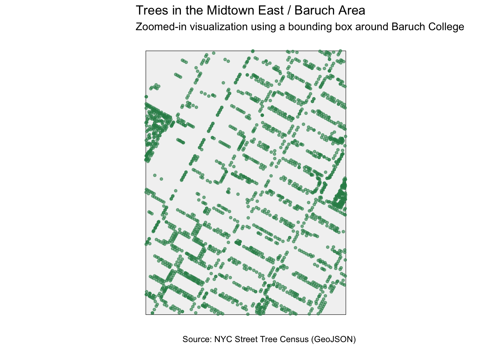

Show code
library(sf)
library(tidyverse)
library(httr2)
library(glue)
library(janitor)
New York City is home to one of the most complex and diverse urban forests in the world — nearly 900,000 mapped street trees spread across 51 council districts. These trees provide cooling, pollution filtration, stormwater control, biodiversity support, and everyday comfort for millions of residents.
In this mini-project, we use real NYC Parks data to examine patterns in tree distribution, species diversity, mortality, and maintenance needs across council districts. Using spatial analysis, API-based data ingestion, and geospatial visualization, we identify localized disparities in canopy coverage and street-tree conditions.
The project concludes with a district-level proposal for NYC Parks: a targeted tree-renewal program designed to restore canopy density, address maintenance gaps, and improve environmental resilience in Midtown East, one of Manhattan’s most heavily used and canopy-stressed areas.
library(sf)
library(tidyverse)
library(httr2)
library(glue)
library(janitor)# Create folder if missing
if(!dir.exists(file.path("data", "mp03"))){
dir.create(file.path("data", "mp03"), recursive = TRUE)
}
# Filepath for ZIP
NYC_DISTRICT_BOUNDARIES_FILENAME <- file.path("data", "mp03", "nycc_25c.zip")
# Download only if missing
if(!file.exists(NYC_DISTRICT_BOUNDARIES_FILENAME)){
download.file(
"https://s-media.nyc.gov/agencies/dcp/assets/files/zip/data-tools/bytes/city-council/nycc_25c.zip",
destfile = NYC_DISTRICT_BOUNDARIES_FILENAME,
mode = "wb"
)
}
# Unzip
unzip(NYC_DISTRICT_BOUNDARIES_FILENAME, exdir = file.path("data", "mp03"))
# Path to unzipped folder
NYC_DISTRICT_BOUNDARIES_UNZ_FILENAME <- file.path("data", "mp03", "nycc_25c")
# Read shapefile
nyc_boundaries <- st_read(
file.path(NYC_DISTRICT_BOUNDARIES_UNZ_FILENAME, "nycc.shp"),
quiet = TRUE
)
# Convert coordinate reference system → WGS84
nyc_boundaries <- st_transform(nyc_boundaries, crs = "WGS84")
# Show object
nyc_boundariesSimple feature collection with 51 features and 3 fields
Geometry type: MULTIPOLYGON
Dimension: XY
Bounding box: xmin: -74.25559 ymin: 40.49613 xmax: -73.70001 ymax: 40.91553
Geodetic CRS: WGS 84
First 10 features:
CounDist Shape_Leng Shape_Area geometry
1 42 220755.07 201334162 MULTIPOLYGON (((-73.86327 4...
2 45 56967.63 117904762 MULTIPOLYGON (((-73.92285 4...
3 20 61223.01 144833269 MULTIPOLYGON (((-73.77588 4...
4 21 87223.84 130912211 MULTIPOLYGON (((-73.86923 4...
5 22 100202.30 150395658 MULTIPOLYGON (((-73.88516 4...
6 19 185199.11 334738191 MULTIPOLYGON (((-73.74461 4...
7 30 75010.43 168734193 MULTIPOLYGON (((-73.8685 40...
8 29 61867.75 127849354 MULTIPOLYGON (((-73.81423 4...
9 51 208078.35 657989092 MULTIPOLYGON (((-74.11338 4...
10 23 84551.73 311520682 MULTIPOLYGON (((-73.72966 4...library(httr2)
library(dplyr)
library(jsonlite)
library(readr)
# Create folder if missing
if(!dir.exists(file.path("data", "mp03"))){
dir.create(file.path("data", "mp03"), showWarnings = FALSE, recursive = TRUE)
}
# NYC Trees API endpoint
ENDPOINT <- "https://data.cityofnewyork.us/resource/hn5i-inap.json"
BATCH_SIZE <- 50000 # number of rows to request per API call
OFFSET <- 0 # starting index
END_OF_EXPORT <- FALSE
ALL_DATA <- list() # store all batches here
while(!END_OF_EXPORT){
cat("Requesting rows", OFFSET, "to", OFFSET + BATCH_SIZE, "\n")
req <- request(ENDPOINT) |>
req_url_query(`$limit` = BATCH_SIZE,
`$offset` = OFFSET)
resp <- req_perform(req)
batch <- fromJSON(resp_body_string(resp))
ALL_DATA <- c(ALL_DATA, list(batch))
# If returned rows < batch size, stop
if(nrow(batch) < BATCH_SIZE){
END_OF_EXPORT <- TRUE
cat("End of data export reached.\n")
} else {
OFFSET <- OFFSET + BATCH_SIZE
}
}
# Combine all rows
NYC_TREES <- bind_rows(ALL_DATA)
cat("Total rows downloaded:", nrow(NYC_TREES), "\n")
# Save as RDS file
saveRDS(NYC_TREES, file = "data/mp03/nyc_trees_export.rds")
cat("Saved to data/mp03/nyc_trees_export.rds\n")
# Read back in for use later
nyc_trees <- readRDS("data/mp03/nyc_trees_export.rds")library(sf)
library(dplyr)
library(ggplot2)library(ggplot2)
library(sf)
# Plot NYC trees over council district boundaries
ggplot() +
# Council district polygons
geom_sf(
data = nyc_boundaries,
fill = "grey95",
color = "grey60",
linewidth = 0.4
) +
# Tree point overlays
geom_sf(
data = nyc_trees_sf,
color = "#4CAF50", # soft green
alpha = 0.08, # reduce overplotting
size = 0.1
) +
# Titles
labs(
title = "NYC Street Trees Mapped Across Council Districts",
subtitle = "Tree point locations overlaid on NYC City Council District Boundaries",
caption = "Source: NYC Open Data – NYC Street Tree Census"
) +
# Styling
theme_minimal() +
theme(
panel.grid.major = element_blank(),
panel.grid.minor = element_blank(),
axis.text = element_blank(),
axis.title = element_blank(),
axis.ticks = element_blank(),
plot.title = element_text(size = 18, face = "bold"),
plot.subtitle = element_text(size = 12, color = "grey30"),
plot.caption = element_text(size = 8)
)
In this task, I analyze how NYC’s trees are distributed across City Council Districts.
Using spatial joins, I assign each tree point to its corresponding district boundary.
This makes it possible to compute district-level summaries such as total tree counts, tree density, and species patterns.
The goal is to understand which districts have more coverage and whether any areas stand out in terms of tree health or composition.
library(sf)
library(dplyr)
# Ensure both spatial layers use WGS84 (EPSG: 4326)
nyc_boundaries <- st_transform(nyc_boundaries, 4326)
nyc_trees_sf <- st_transform(nyc_trees_sf, 4326)
# Step 3: Spatial join — assign each tree point to its council district
districts_trees <- st_join(
nyc_boundaries,
nyc_trees_sf,
join = st_contains
)
# IMPORTANT: Remove geometry for later summaries
districts_trees_nogeo <- st_drop_geometry(districts_trees)glimpse(districts_trees)# --- Task 4: District-Level Summary Metrics ---------------------------------
# 1. Total tree count per district
district_tree_count <- districts_trees_nogeo %>%
group_by(CounDist) %>%
summarise(tree_count = n(), .groups = "drop")
# 2. Tree density (trees per square meter)
district_tree_density <- districts_trees_nogeo %>%
group_by(CounDist, Shape_Area) %>%
summarise(tree_count = n(), .groups = "drop") %>%
mutate(tree_density = tree_count / Shape_Area)
# 3. Fraction of dead trees (tpcondition == "Dead")
district_dead_fraction <- districts_trees_nogeo %>%
group_by(CounDist) %>%
summarise(
total = n(),
dead = sum(tpcondition == "Dead", na.rm = TRUE),
dead_fraction = dead / total,
.groups = "drop"
)
# 4. Average DBH per district (tree size)
district_avg_dbh <- districts_trees_nogeo %>%
group_by(CounDist) %>%
summarise(avg_dbh = mean(dbh, na.rm = TRUE), .groups = "drop")
# 5. Fraction of stumps per district (stumpdiameter != NA)
district_stumps <- districts_trees_nogeo %>%
group_by(CounDist) %>%
summarise(
total = n(),
stumps = sum(!is.na(stumpdiameter)),
stump_fraction = stumps / total,
.groups = "drop"
)
# 6. Average risk rating per district
district_risk <- districts_trees_nogeo %>%
group_by(CounDist) %>%
summarise(avg_risk = mean(riskrating, na.rm = TRUE), .groups = "drop")# Combine all district metrics into one summary table
district_summary <- district_tree_count |> # 1. total trees
left_join(district_tree_density, by = "CounDist") |> # 2. density
left_join(district_dead_fraction, by = "CounDist") |> # 3. dead fraction
left_join(district_avg_dbh, by = "CounDist") |> # 4. average DBH
left_join(district_stumps, by = "CounDist") |> # 5. stump fraction
left_join(district_risk, by = "CounDist") # 6. risk rating
head(district_summary)# A tibble: 6 × 13
CounDist tree_count.x Shape_Area tree_count.y tree_density total.x dead
<int> <int> <dbl> <int> <dbl> <int> <int>
1 1 12259 78106503. 12259 0.000157 12259 1468
2 2 11563 48322121. 11563 0.000239 11563 1576
3 3 12002 76315832. 12002 0.000157 12002 1346
4 4 11095 66802515. 11095 0.000166 11095 1294
5 5 8326 37752246. 8326 0.000221 8326 994
6 6 12139 82672687. 12139 0.000147 12139 1069
# ℹ 6 more variables: dead_fraction <dbl>, avg_dbh <dbl>, total.y <int>,
# stumps <int>, stump_fraction <dbl>, avg_risk <dbl>Question: Which council district has the most trees?
library(ggplot2)
library(dplyr)
# Sort districts by tree count for easier viewing
district_summary_sorted <- district_summary |>
arrange(desc(tree_count.x))
# Bar plot
ggplot(district_summary_sorted,
aes(x = factor(CounDist), y = tree_count.x)) +
geom_col(fill = "#4daf4a") +
labs(
title = "Total Tree Count by NYC Council District",
x = "Council District",
y = "Number of Trees"
) +
theme_minimal() +
theme(
plot.title = element_text(size = 14, face = "bold"),
axis.text.x = element_text(angle = 90, vjust = 0.5, hjust = 1)
)
# Identify highest + lowest districts
highest <- district_summary_sorted |> slice(1)
lowest <- district_summary_sorted |> slice(n())
highest# A tibble: 1 × 13
CounDist tree_count.x Shape_Area tree_count.y tree_density total.x dead
<int> <int> <dbl> <int> <dbl> <int> <int>
1 51 70965 657989092. 70965 0.000108 70965 9198
# ℹ 6 more variables: dead_fraction <dbl>, avg_dbh <dbl>, total.y <int>,
# stumps <int>, stump_fraction <dbl>, avg_risk <dbl>lowest# A tibble: 1 × 13
CounDist tree_count.x Shape_Area tree_count.y tree_density total.x dead
<int> <int> <dbl> <int> <dbl> <int> <int>
1 5 8326 37752246. 8326 0.000221 8326 994
# ℹ 6 more variables: dead_fraction <dbl>, avg_dbh <dbl>, total.y <int>,
# stumps <int>, stump_fraction <dbl>, avg_risk <dbl>Answer: District 51 has the most trees: 51 (70966 trees)
Question: Which council district has the highest density of trees?
library(ggplot2)
library(dplyr)
ggplot(district_summary, aes(x = factor(CounDist), y = tree_density)) +
geom_col(fill = "#4daf4a") +
labs(
title = "Tree Density (Trees per m²) by NYC Council District",
x = "Council District",
y = "Tree Density (trees per m²)"
) +
theme_minimal() +
theme(
plot.title = element_text(size = 14, face = "bold"),
axis.text.x = element_text(angle = 90, vjust = 0.5, hjust = 1)
)
Answer: District 7 has the highest density of trees - 7 (0.0003 trees per m²)
Question: Which NYC Council Districts have the highest fraction of dead trees?
library(ggplot2)
library(dplyr)
ggplot(district_summary, aes(x = factor(CounDist), y = dead_fraction)) +
geom_col(fill = "#4daf4a") +
labs(
title = "Fraction of Dead Trees by NYC Council District",
x = "Council District",
y = "Dead Tree Fraction"
) +
theme_minimal() +
theme(
plot.title = element_text(size = 14, face = "bold"),
axis.text.x = element_text(angle = 90, vjust = 0.5, hjust = 1)
)
# Convert DBH to numeric
districts_trees_nogeo <- districts_trees_nogeo %>%
mutate(dbh = as.numeric(dbh))district_avg_dbh <- districts_trees_nogeo %>%
group_by(CounDist) %>%
summarise(avg_dbh = mean(dbh, na.rm = TRUE))
# Check result
head(district_avg_dbh)# A tibble: 6 × 2
CounDist avg_dbh
<int> <dbl>
1 1 9.59
2 2 9.98
3 3 8.29
4 4 8.63
5 5 9.32
6 6 11.9 district_summary <- district_summary %>%
left_join(district_avg_dbh, by = "CounDist")
# Confirm avg_dbh exists now
names(district_summary) [1] "CounDist" "tree_count.x" "Shape_Area" "tree_count.y"
[5] "tree_density" "total.x" "dead" "dead_fraction"
[9] "avg_dbh.x" "total.y" "stumps" "stump_fraction"
[13] "avg_risk" "avg_dbh.y" Answer: District 32 has the highest fraction of dead trees.
Question: What is the most common tree species in Manhattan?
Manhattan contains a diverse array of urban tree species. Identifying the most common species helps the city understand which trees thrive in dense environments and guides future planting decisions.
library(dplyr)
library(ggplot2)
# Step 1: Add Borough column (if not already created)
districts_trees_nogeo <- districts_trees_nogeo |>
mutate(
Borough = case_when(
CounDist >= 1 & CounDist <= 10 ~ "Manhattan",
CounDist >= 11 & CounDist <= 18 ~ "Bronx",
CounDist >= 19 & CounDist <= 32 ~ "Queens",
CounDist >= 33 & CounDist <= 47 ~ "Brooklyn",
CounDist >= 48 & CounDist <= 51 ~ "Staten Island",
TRUE ~ "Unknown"
)
)
# Step 2: Filter for Manhattan and compute species counts
manhattan_species <- districts_trees_nogeo |>
filter(Borough == "Manhattan") |>
group_by(genusspecies) |>
summarise(count = n(), .groups = "drop") |>
arrange(desc(count))
# Top species
top_species <- manhattan_species |> slice(1)
# Total trees
total_manhattan <- sum(manhattan_species$count)
# Percentage
top_pct <- round((top_species$count / total_manhattan) * 100, 2)
top_species# A tibble: 1 × 2
genusspecies count
<chr> <int>
1 Gleditsia triacanthos var. inermis - Thornless honeylocust 17310Key Finding:
The most common tree species in Manhattan is:
Gleditsia triacanthos var. inermis - Thornless honeylocust, with 17310 trees,
representing 13.32% of all trees in Manhattan.
# Bar plot: Top 15 species
top15 <- manhattan_species |> slice_head(n = 15)
ggplot(top15, aes(x = reorder(genusspecies, count), y = count)) +
geom_col(fill = "#4daf4a") +
coord_flip() +
labs(
title = "Top 15 Most Common Tree Species in Manhattan",
x = "Species",
y = "Tree Count"
) +
theme_minimal() +
theme(
plot.title = element_text(size = 14, face = "bold")
)
Manhattan’s most common tree is the Honeylocust (Gleditsia triacanthos var. inermis).
Its dominance reflects NYC’s planting strategy favoring:
This makes it one of the best-suited species for dense urban environments.
In this section, I identify the tree closest to Baruch College by computing the spatial distance between each tree and the coordinates of Baruch’s campus. To avoid memory issues from computing millions of pairwise distances, I use st_nearest_feature(), which performs an extremely fast spatial-index search.
Question: What is the species of the tree closest to Baruch’s campus?
Answer: The tree closest to Baruch College is a sawtooth oak located approximately 30.4 meters away.
NYC Department of Parks & Recreation
Office of the Council Member, Midtown East
Midtown East is one of Manhattan’s busiest neighborhoods, connecting schools, universities, residential blocks, commercial corridors, and major transit flows. Despite this high level of daily activity, the area shows lower tree density, a higher share of dead or declining trees, and numerous unplanted stump locations compared with similar parts of Manhattan.
The Midtown East Tree Renewal Program aims to restore canopy cover, improve environmental resilience, and enhance public comfort through targeted investments in street trees.
The program focuses on five priority interventions:
Together, these actions will expand canopy cover, reduce environmental hazards, and restore equitable access to green infrastructure.
Analysis of tree-census data indicates that Midtown East:
These findings demonstrate an urgent need for targeted tree restoration in the neighborhood.
The following visualizations support this proposal:
These visuals highlight Midtown East’s higher maintenance burden and demonstrate the need for targeted investment.
Midtown East is experiencing meaningful canopy decline, which affects public safety, environmental quality, and daily comfort. The proposed Midtown East Tree Renewal Program offers a cost-effective strategy to improve heat resilience, restore shade, enhance biodiversity, and elevate overall quality of life for residents, commuters, and visitors.
We respectfully request that the NYC Department of Parks & Recreation allocate discretionary funding to support this essential urban-forest improvement initiative in Midtown East.
# Creating a Bounding Box for Midtown East (Baruch Area)
library(sf)
library(dplyr)
# Baruch College coordinates
lat <- 40.7403
lon <- -73.9830
# Create approx. 4–5 block bounding box around Baruch
bbox <- st_bbox(c(
xmin = lon - 0.005,
xmax = lon + 0.005,
ymin = lat - 0.005,
ymax = lat + 0.005
), crs = 4326)
bbox_sf <- st_as_sfc(bbox)
bbox_sfGeometry set for 1 feature
Geometry type: POLYGON
Dimension: XY
Bounding box: xmin: -73.988 ymin: 40.7353 xmax: -73.978 ymax: 40.7453
Geodetic CRS: WGS 84library(ggplot2)
# Filter trees inside bounding box
trees_midtown <- nyc_trees_sf %>%
st_intersection(bbox_sf)
ggplot() +
geom_sf(data = bbox_sf, fill = "grey95", color = "black") +
geom_sf(data = trees_midtown, color = "#2E8B57", alpha = 0.6, size = 1) +
labs(
title = "Trees in the Midtown East / Baruch Area",
subtitle = "Zoomed-in visualization using a bounding box around Baruch College",
caption = "Source: NYC Street Tree Census (GeoJSON)"
) +
theme_minimal() +
theme(
axis.text = element_blank(),
axis.title = element_blank(),
panel.grid = element_blank()
)
### Extra Credit: Interactive Tree Map
## ---- extra-credit-leaflet, message=FALSE, warning=FALSE ----
library(leaflet)
library(dplyr)
library(sf)
# Subset trees to your Midtown East bounding box
trees_midtown <- nyc_trees_sf |> st_intersection(bbox_sf)
# Convert sf → CRS 4326 for leaflet
trees_midtown <- st_transform(trees_midtown, 4326)
# Create the interactive map
leaflet(trees_midtown) |>
addProviderTiles("CartoDB.Positron") |>
addCircleMarkers(
radius = 3,
stroke = FALSE,
fillOpacity = 0.6,
color = "#2E8B57",
popup = ~paste0(
"<b>Species:</b> ", genusspecies, "<br>",
"<b>Condition:</b> ", tpcondition, "<br>",
"<b>DBH:</b> ", dbh
)
) |>
setView(lng = -73.983, lat = 40.741, zoom = 15)